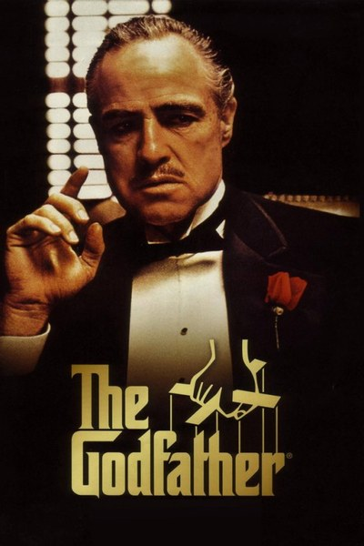
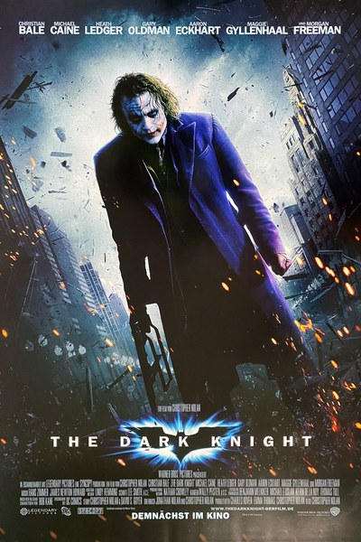
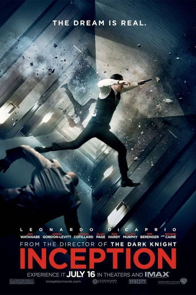
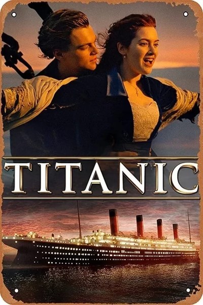
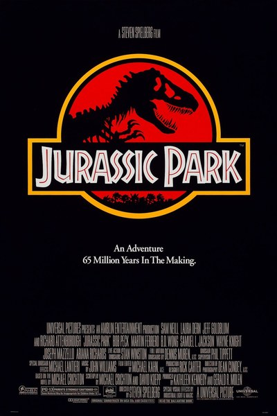
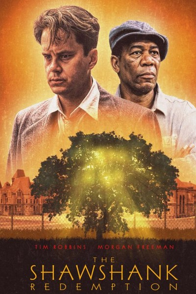

Что такое Голливуд
Голливуд — район Лос-Анджелеса в Калифорнии, ставший синонимом американской киноиндустрии. Первые студии появились здесь в 1910-х годах: мягкий климат, солнечная погода и разнообразные пейзажи рядом позволяли снимать почти круглый год. Знаменитая надпись на холме Гриффит-парка первоначально читалась как «Hollywoodland» и была рекламой жилого квартала. Здесь расположены павильоны крупнейших студий, а в Dolby Theatre проходит церемония «Оскар».
Этот сайт — небольшой справочник по голливудским фильмам: ниже рассказы о нескольких картинах, а в таблице собраны 50 известных лент с годом выхода, бюджетом, сборами и рейтингом. Голливудские студии делят между собой «большая пятёрка»: Warner Bros., Universal, Paramount, Walt Disney и Sony Pictures. Первая церемония вручения премии «Оскар» прошла 16 мая 1929 года. Главная улица района — Голливудский бульвар со знаменитой Аллеей славы.

Тёмный рыцарь (2008)
Вторая часть трилогии Нолана о Бэтмене. Бэтмен, комиссар Гордон и прокурор Харви Дент пытаются очистить Готэм от организованной преступности, но на их пути встаёт Джокер — хаос, который невозможно купить или запугать. Фильм вышел в 2008 году, режиссёром и соавтором сценария стал Кристофер Нолан. В главных ролях снялись Кристиан Бейл, Хит Леджер, Аарон Экхарт и Мэгги Джилленхол.

Роль Джокера принесла Хиту Леджеру посмертный «Оскар». Картина стала одной из первых крупных игровых лент, часть которой снята камерами IMAX, и самым кассовым фильмом 2008 года. Сюжет строится на противостоянии Бэтмена и Джокера в борьбе за душу города.
Начало
Вор, крадущий идеи из снов, должен внедрить мысль в сознание наследника корпорации.

Титаник
История любви пассажиров разных классов на фоне гибели легендарного лайнера в апреле 1912 года.

Парк Юрского периода
Учёные оживляют динозавров по ДНК из древнего янтаря, и система безопасности парка даёт сбой.

Побег из Шоушенка
Банкир Энди Дюфрейн, осуждённый за убийство, годами ищет путь на свободу.
